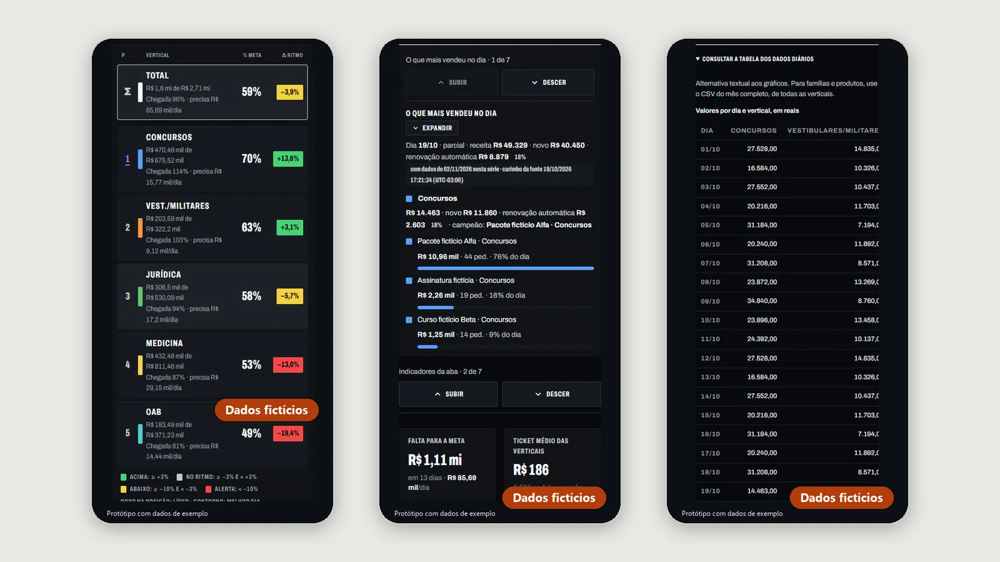
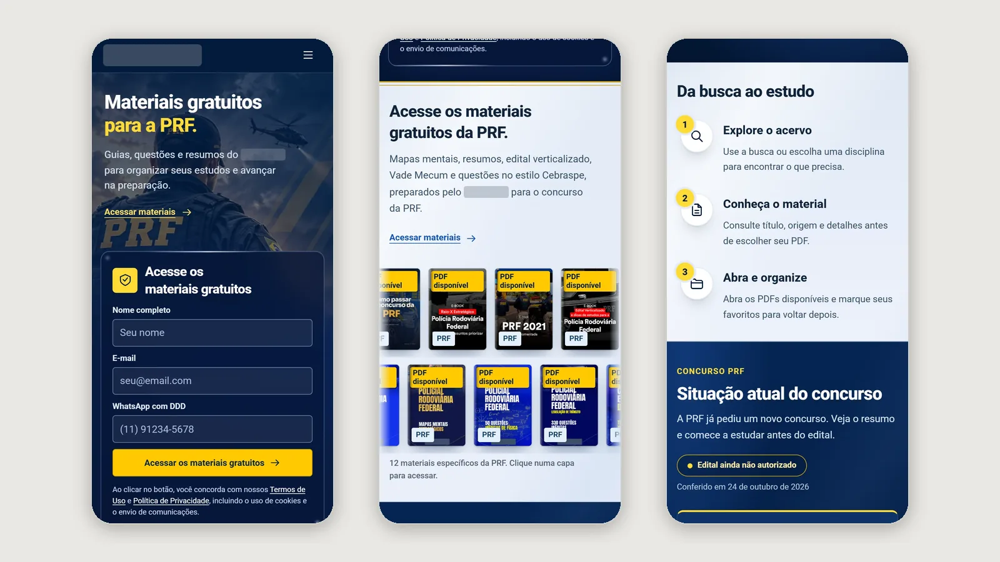
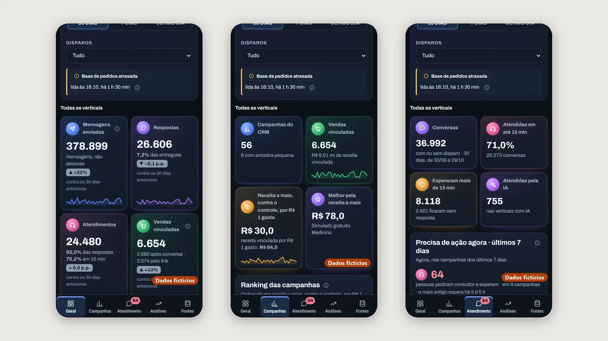

Visão geral
O mês inteiro contra a meta, com o realizado e o que falta.
Painéis de dados, sites e plataformas que desenho e construo, do produto e dos dados à interface. Do mais recente ao mais antigo.
01Painel de dados · novembro de 2026
As vendas do mês contra as metas, por área de produto, com o que está sendo vendido e o ritmo necessário até o fim do mês. Nas telas abaixo, todos os números são fictícios.
Telas com dados de exemplo.
O mês inteiro contra a meta, com o realizado e o que falta.
Cada área com a sua cor, a sua meta e os seus destaques.
Metas mensais editáveis, usadas na página e nas contas.
Quanto precisa entrar por dia para fechar cada meta.
O mês inteiro em CSV, com todas as áreas.
Publicado para a equipe, com acesso por senha e os números atualizados sozinhos ao longo do dia.

As telas desta página usam dados de exemplo; nenhum valor real aparece.
Desenvolvo a interface e as contas, ligo os dados à publicação e testo cada mudança no computador e no celular.
HTML, CSS e JavaScript, com gráficos em SVG.
Dados protegidos por senha e atualização automática.
Contas conferidas por testes automáticos e no navegador.
Publicado e em uso pela equipe.
02Site · outubro de 2026
Materiais de estudo gratuitos para o concurso da PRF, com um cadastro simples e uma biblioteca para explorar por assunto.
Nome, e-mail e WhatsApp, sem senha nem perfil.
Mapas mentais, resumos, questões e Vade Mecum em PDF.
Busca por disciplina, detalhes do material e favoritos.
O andamento do concurso, com a data da última checagem.
Resumos com data e link para a fonte original.
Publicado no site do cliente para quem se prepara para a PRF, no computador e no celular.

Telas da página pública, com o formulário vazio; o nome e o logo da empresa foram cobertos.
Desenvolvo as páginas e a biblioteca, preparo a publicação no site do cliente e testo cada fluxo, do cadastro ao PDF.
Páginas, biblioteca e cadastro.
Publicação, arquivos e cadastro.
Navegador, celular e acessibilidade.
Publicado e no ar.
03Painel de dados · outubro de 2026
O caminho de uma venda pelo WhatsApp, do disparo da mensagem à compra, por área de produto e por dia. Nas telas abaixo, os números e os nomes são fictícios.
Protótipo com dados de exemplo.
O caminho do disparo à compra num só lugar.
Ranking por vendas, conversão e vendas extras.
Quem pediu um consultor e há quanto tempo espera.
As vendas que a mensagem trouxe de fato.
Cada número com a fonte e o horário da leitura.
Protótipo publicado com dados de exemplo, para validar o desenho com a equipe de vendas.

Todos os números e nomes das telas são de exemplo.
Desenvolvo a interface, as regras de cada número e os dados de exemplo e testo tudo no computador e no celular.
HTML, CSS e JavaScript num arquivo só.
O caminho, o grupo de controle e as fontes.
Vercel, com conferência no computador e no celular.
Protótipo com dados de exemplo.
04Plataforma de estudos · setembro e outubro de 2026
Aulas, questões e acompanhamento de progresso em uma experiência integrada.
Menu organizado para seguir a jornada de estudo.
Próximas atividades e aulas reunidas na página inicial.
Atividades para praticar os conteúdos estudados.
Encontros e horários organizados na agenda.
Pontos, presenças e histórico para acompanhar a evolução.
Maratona Concursos do Zero: campanha completa, de 24 de setembro a 11 de outubro de 2026.
Totais agregados dos relatórios da campanha, sem dados pessoais.
Desenvolvo a interface, implemento o acesso e as integrações e testo os fluxos no computador e no celular.
Desenvolvimento da interface.
Dados, acesso e integração com CRM.
Verificação do comportamento com Playwright.
Versão publicada, em evolução.